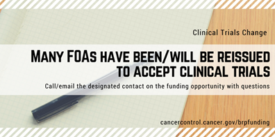
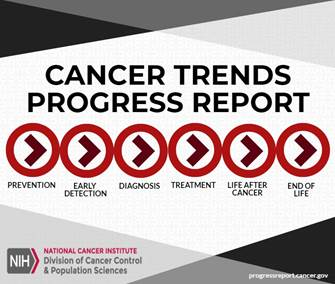
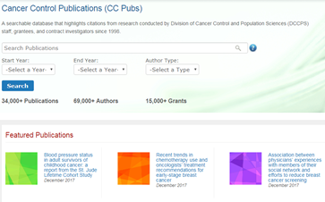
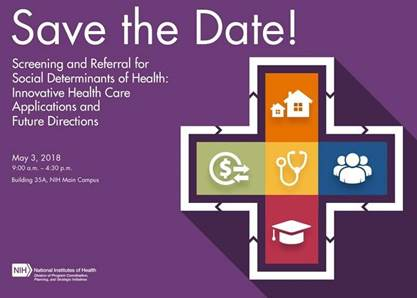
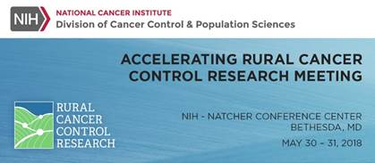

Spring 2018 Newsletter
Foreword by Bradford Hesse, Chief of the Health Communication and Informatics Research Branch
When the Health Communication and Informatics Research Branch (HCIRB) formed at the turn of the millennium, NCI declared an extraordinary opportunity to conduct research in cancer communications. The World Wide Web was new; patients were showing up to their oncologists’ appointments with reams of computer printouts gathered from the Web; and the imminent completion of the Human Genome project was heralding a shift in medicine toward a paradigm that would be more predictive, preemptive, personalized, and participative than ever before. However, we knew much more about how to calculate genomic-based risk predictions than how to communicate those risks to patients. Although the internet was changing every aspect of communication in other sectors, we were only at the beginning of understanding how to use these new electronic capacities to support our patients or effectively elevate public knowledge and awareness. HCIRB was formed to spur research in these communication-related areas. To assist the extramural community in staying ahead of these massive shifts in the health communication environment, HCIRB launched the Health Information National Trends Survey, or HINTS.
Fast forward to 2018 -- HCIRB is now nearly two decades old, precision medicine is becoming a reality, and Electronic Health Records (EHR) undergird our health care system. Additionally, social media is a global communication force and the use of mobile devices far outstrips the use of telephone landlines in connecting people to the world.
The HINTS program has monitored each of those changes over the years and has the led the way at NIH in data-sharing by making data from each one of its 10 administrations publicly available to the extramural community for collective analysis. Visit the HINTS website to learn more about the newly released 2017 HINTS data. Co-sponsored by the Food and Drug Administration (FDA) and the Office of the National Coordinator for Health Information Technology (ONC), these new data provide cutting-edge insights into how the public is responding to messages surrounding new tobacco products; how they are using a new raft of communication technologies in their daily lives; and how responsive they are to medicine’s push toward patient empowerment. Recently, ONC highlighted HINTS in a data brief about how patients and providers use online medical records.
Download the data and join the hundreds of authors whose publications based on HINTS analyses are catalogued through PubMed and enumerated at the HINTS website. Feel free to download and circulate any one of the 35 HINTS Briefs that encapsulate valuable lessons learned from these papers into focused synopses for cancer-control planners. More importantly, please join us Sept. 13-14, 2018, for the Fifth HINTS Data Users Conference  at the Natcher Auditorium on the NIH campus in Bethesda, MD. The registration
at the Natcher Auditorium on the NIH campus in Bethesda, MD. The registration  and abstract submission site
and abstract submission site  are now open.
are now open.
Other notable projects from the past few years include a 2016 President’s Cancer Panel report titled “Improving Cancer-Related Outcomes with Connected Health.” Written in collaboration with our branch’s staff, the report offers members of the cancer community concrete suggestions for ensuring patients and the public are supported in their connections to the health care system.
Most recently, three priority research areas are especially relevant to our research community. One priority calls for a better understanding of how connected health can enable effective teamwork in health care. A second area calls for intervention strategies to enhance patient engagement in health care. A third priority seeks to use data from connected devices in ways that enhance clinical care. The branch has developed several funding announcements to support research into these areas. Read about these announcements on our funding page.
In our Connected Health report, one of our most explicit recommendations is for NCI to collaborate with other government agencies and private partners to ensure that all people receive equitable access to the benefits of connected health technologies. Read below to learn more about the inaugural project that aims to bridge the broadband connectivity gap in rural Appalachia.
As always, we encourage you to reach out to any BRP staff with questions, ideas, or concerns, either by email at ncidccpsbrpadvances@mail.nih.gov or at one of the many conferences we attend.
Sincerely,
Brad Hesse on behalf of the Health Communication and Informatics Research Branch
New Funding Announcements
Many BRP Funding Opportunity Announcements (FOAs) have been reissued or are in the process of being reissued to accept clinical trials (i.e., clinical trials optional). Go to our funding page for a complete list of FOAs. To keep up-to-date on the status of FOAs, please email or call the designated contact with questions or concerns.
| Funding Opportunity Announcements | Announcement # / Mechanism(s) | Program Contact |
|---|---|---|
| Cancer Prevention and Control Clinical Trials Grant Program | PAR-18-559 (R01 Clinical Trial Required) | Susan Czajkowski 240-276-5871 czajkows@nci.nih.gov |
| NCI Small Grants Program for Cancer Research (NCI Omnibus) | PAR-18-021 (R03 Clinical Trial Optional) | Gina Tesauro 240-276-6786 gina.tesauro@nih.gov |
| Time-Sensitive Research on Health Risk and Resilience after Hurricanes Irma and Maria in Puerto Rico and the U.S. Virgin Islands | RFA-MD-18-006 (R21 Clinical Trial Not Allowed) | Paige Green 240-276-6899 paige.green@nih.gov |
| End-of-Life and Palliative Care Health Literacy: Improving Outcomes in Serious, Advanced Illness (R21 Clinical Trial Optional) | PA-18-498 (R01 Clinical Trial Optional) PA-18-499 (R21 Clinical Trial Optional) |
 Sylvia Chou 240-276-6954 chouws@mail.nih.gov |
Emerging BRP Initiatives and Collaborations
Experts Collaborate with BRP Staff to Improve Skin-Cancer Control Efforts
Improving skin-cancer outcomes is a priority for the BRP, yet sun protective behaviors in the U.S. remain underused. BRP convened a two-day meeting with 19 experts from various fields in 2016 to discuss this topic. The National Academy of Sciences hosted the meeting.
The team summarized their discussions in a January 2018 article in JAMA Dermatology titled Interdisciplinary Perspectives on Sun Safety. The group discussed knowledge gaps, various perspectives on sun exposure, implications for skin cancer risk and other health outcomes, and new directions for the field. Based on their discussions, the researchers identified five themes that will help improve skin-cancer control efforts in the U.S.:
- The definition of risk must be expanded, and categories for skin physiology must be refined to incorporate population diversities.
- Risky sun exposure often co-occurs with other health-related behaviors.
- Messages must be nuanced to target at-risk populations.
- People at risk for tanning disorder must be recognized and treated.
- Sun safety interventions must be scalable.
Reference: Geller, A.C., Jablonski, N.G., Pagoto, S.L., Hay, J.L., Hillhouse, J., Buller, D.B., Kenney, W.L., Robinson, J.K., Weller, R.B., Moreno, M.A., Gilchrest, B.A., Sinclair, C., Arndt, J., Taber, J.M., Morris, K.L., Dwyer, L.A., Perna, F.M., Klein, W.M.P., Suls, J. (2018) Interdisciplinary perspectives on sun safety. JAMA Dermatol. doi: 10.1001/jamadermatol.2017.4201.
Public-Private Partnership Aims to Improve Cancer Control in Rural Areas
HCIRB partnered with the Federal Communications Commission to address the broadband health connectivity gap in rural areas of the U.S. Rural Americans are more likely to die of cancer and report lower quality treatment experiences. They are also more likely to be without broadband internet. The long-term goal of this partnership is to improve cancer outcomes by better connecting rural patients to their cancer care teams.
An inaugural project of the partnership is the Linking and Amplifying User-Centered Networks through Connected Health (L.A.U.N.C.H.) project. This public-private partnership brings together researchers from the University of California at San Diego, the University of Kentucky, and the biopharmaceutical company Amgen. Using an implementation science lens, the project aims to redesign access to care using biosensors, smartphones, patient-reported outcomes, and other techniques to reduce disconnections between patients and their care teams.
Reference: FCC-NCI Broadband Cancer Collaboration. Nov. 3, 2017.
https://www.fcc.gov/health/cancer
Scientific Advances
Assessments Crucial for Implementing Childhood Obesity-Related Behavioral Interventions
HCIRB grantee Shari Barkin recently published an article in Health Research Policy & Systems based on the first phase of her team’s R21 grant. Their research seeks to develop a systematic approach for determining the readiness of a community for a childhood obesity-related behavioral intervention. Dr. Barkin and her team found that using a comprehensive pre-implementation assessment can help with the dissemination efforts of such behavioral interventions.
Grant Citation: Adaptation of a Prevention-Treatment (ADAPT) Program: Reducing Cancer Risk for Families with Young Children, Shari Barkin, Vanderbilt University Medical Center. R21CA197344
Reference: Teeters, L.A., Heerman, W.J., Schlundt, D., Harris, D., Barkin, S.L. (2018). Community readiness assessment for obesity research: pilot implementation of the Healthier Families programme. Health Res Policy Syst. doi: 10.1186/s12961-017-0262-0.
Cancer Clinical Trials Care Providers Have Diverse Understandings of Palliative Care
BRP and Healthcare Delivery Research Program (also part of the Division of Cancer Control and Population Sciences (DCCPS)) staff and fellows conducted a qualitative key informant study. They interviewed 19 health care providers in cancer clinical trials and found great variation in the way providers understood the term “palliative care” and how it is delivered. Major themes related to the meaning of palliative care included the holistic aspects of palliative care, the importance of symptom management and care, and the fact that people often conflate the meaning of palliative care and end-of-life or hospice care. The researchers concluded that a standard model for integrating palliative care into clinical trials is needed.
Reference: Mollica, M.A., Kent, E.E., Castro, K., Ellis, E., Ferrer, R., Falisi, A., Gaysynsky, A., Huang, G., Palan, M., & Chou, W.S. (2017). Perspectives on palliative care in cancer clinical trials: Diverse meanings from multidisciplinary cancer care providers. J Palliat Med. doi: 10.1089/jpm.2017.0445. [Epub ahead of print]
HCIRB Chief Recommends Ways to Make Psychological Research More Open
HCIRB branch chief Brad Hesse presents his vision for bringing the open science movement to psychological science research. He defines open science as making publications, concepts, protocols, and data accessible to everyone. He discusses the delicate balance between open data and the current structures that reward individual productivity. There are also the practical limitations of where to host large data sets and how to analyze them. Hesse dissects recent initiatives that have used an open science approach. He makes four recommendations to encourage psychologists to use open science within their own communities and spur change in other scientific communities:
- Nurture innovation and agile learning
- Think outside the paradigm
- Create simplicity from complexity
- Participate in continuous learning evidence platforms
Reference: Hesse, B. (2018) Can psychology walk the walk of open science? Am Psychol. doi: 10.1037/amp0000197.
Prevalence of Tobacco Product Use by Adults Estimated by State, Using TUS-CPS Data
Ongoing surveillance at the national and state levels is vital for tracking trends in the use of tobacco products. Using data from the 2014–2015 Tobacco Use Supplement to the Current Population Survey (TUS-CPS), CDC investigators and TCRB researchers Gordon Willis and Anne Hartman analyzed self-reported use of cigars, regular pipes, water pipes, electronic cigarettes as well as cigarettes and smokeless tobacco among adults in all U.S. states and the District of Columbia. Prevalence of ever-use of any tobacco product ranged from 27.0% (Utah) to 55.4% (Wyoming), and prevalence of current use of any tobacco product ranged from 10.2% (California) to 27.7% (Wyoming). The prevalence of current use of one or more tobacco products in addition to cigarettes ranged from 11.5% (Delaware) to 32.3% (Oregon). Differences in tobacco product use across states underscores the importance of using proven population-level strategies to reduce tobacco use and expanding these strategies to cover all forms of tobacco marketed in the U.S.
Reference: Odani, S., Armour, B.S., Graffunder, C.M., Willis, G., Hartman, A.M., Agaku, I.T. (2018) State-specific prevalence of tobacco product use among adults – United States, 2014-2015. MMWR Morb Mortal Wkly Rep doi: 10.15585/mmwr.mm6703a3
Integrating Smoking Cessation into Routine Care at NCI-Designated Cancer Centers
In a recent interview, TCRB’s Glen Morgan describes the purpose of the new Cancer Center Smoking Cessation Initiative. The project provides financial and technical support to cancer centers, so they can implement comprehensive smoking cessation services to at-risk patients. Staff will receive training in: 1) initiating smoking cessation discussions, 2) integrating cessation interventions known to work into routine patient treatment, 3) using states’ quit lines, and 4) incorporating evidence-based smokefree.gov resources into care. The project’s goal is to help make smoking cessation interventions part of routine care for tobacco-related cancers.
Reference: Expanding Smoking Cessation Services at NCI-designated Cancer Centers: An Interview with Dr. Glen Morgan. https://www.cancer.gov/news-events/cancer-currents-blog/2017/smoking-cessation-nci-cancer-centers
Association of Cigarette, Cigar, and Pipe Use with Mortality Risk in the U.S. Population
TCRB’s Anne Hartman and colleagues provided updated estimates on the mortality risks of exclusive use of cigars and pipes. The researchers used data from the Tobacco Use Supplement to the Current Population Survey (TUS-CPS), which was linked to the National Longitudinal Mortality Study (NLMS). They found that current and former exclusive cigarette smokers, current exclusive pipe smokers, and current exclusive cigar smokers are at higher risk for tobacco-related cancer death. The data also highlighted the importance of complete cessation to reduce mortality and morbidity from combustible tobacco use. The study emphasizes the need for complete cessation with its finding that nondaily cigarette smokers (as well as daily smokers) are at increased risk for lung and oral cancers, cardio- and cerebro- vascular diseases, and COPD.
Reference: Christensen, C.H., Rostron, B., Cosgrove, C., Altekruse, S.F., Hartman, A.M., Gibson, J.T., Apelberg, B., Inoue-Choi, M., Freedman, N.D. (2018). Association of Cigarette, Cigar, and Pipe Use With Mortality Risk in the U.S. Population. JAMA Intern Med. doi: 10.1001/jamainternmed.2017.8625.
A Review of Risk Perception Measurement in Tobacco Control Research
TCRB’s Annette Kaufman and colleagues published a literature review examining the characteristics of risk perception measures used in tobacco control research. They also evaluated whether these measures incorporate suggestions put forward by risk perception measurement scholars. The study found little consistency across risk perception measures in the literature they reviewed, and they suggested there might be value in developing and disseminating best practices for assessing tobacco risk perceptions.
Reference: Kaufman, A.R., Persoskie, A., Twesten, J., Bromberg, J. (2018) A review of risk perception measurement in tobacco control research. (2018.) Tobacco Control. doi: 10.1136/tobaccocontrol-2017-054005.
The TCORS Measurement Working Group Tackles E-Cigarette Measurement Issues
TCRB program directors Rachel Grana Mayne and Annette Kaufman are NCI liaisons to the Tobacco Centers of Regulatory Science (TCORS) Measurement Working Group, which recently published three papers in Addictive Behaviors.
Through a review of ENDS constructs measured across select national tobacco use surveys and used within projects of the 14 TCORS, the authors found there is large variability and relatively little consensus in ENDS use measures and suggest considerations for measuring ENDS use.
Reference: Weaver, S.R., Kim, H., Glasser, A.M., Sutfin, E.L., Barrington-Trimis, J., Payne, T.J., Saddleson, M., Loukas, A. (2018). Establishing consensus on survey measures for electronic nicotine and non-nicotine delivery system use: Current challenges and considerations for researchers  . Addict Behav doi: 10.1016/j.addbeh.2017.11.016
. Addict Behav doi: 10.1016/j.addbeh.2017.11.016
To categorize existing e-cigarette perception survey items, 371 items were examined from seven TCORS. The authors provide measurement considerations in four areas: 1) perceptions of benefits, 2) harm perceptions, 3) addiction perceptions, and 4) perceptions of social norms, and note that distinct measures are needed for e-cigarettes.
Reference: Gibson, L.A., Creamer, M.R., Breland, A.B., Giachello, A.L., Kaufman, A., Kong, G., Pechacek, T.F., Pepper, J.K., Soule, E.K., Halpern-Felsher, B. (2018). Measuring perceptions related to e-cigarettes: Important principles and next steps to enhance study validity  . Addict Behav doi: 10.1016/j.addbeh.2017.11.017
. Addict Behav doi: 10.1016/j.addbeh.2017.11.017
A review of the published e-cigarette literature and 12 tobacco dependence measures informed an external expert panel review of constructs for consideration in the development of a measure of dependence. The authors suggest 10 domains to consider including 1) quantity and frequency of use, 2) tolerance, 3) perceived benefits, 4) withdrawal symptoms, 5) craving/urge to use, 6) use despite harm, 7) impaired control, 8) automaticity, 9) preferred over competing rewards, and 10) sensory dependence.
Reference: Bold, K.W., Sussman, S., O'Malley, S.S., Grana, R., Foulds, J., Fishbein, H., Krishnan-Sarin, S. (2018). Measuring E-cigarette dependence: Initial guidance  . Addict Behav doi: 10.1016/j.addbeh.2017.11.015
. Addict Behav doi: 10.1016/j.addbeh.2017.11.015
Communication Regulatory Science: Mapping a New Field
A study led by BRP grantees Seth Noar  and Joseph Cappella
and Joseph Cappella  was published in a special journal issue of Health Communication that introduces communication regulatory science. The researchers describe communication regulatory science as an emerging field that seeks to inform regulatory actions that promote optimal communication using validated techniques, tools, and models. The authors summarize the FDA regulation of tobacco products and provide ten examples of ongoing work in communication regulatory science, specifically relating to tobacco control. They conclude that communication regulatory science in the realm of tobacco control could have an instrumental impact on the tobacco epidemic and population health by helping public health researchers implement effective communication to prevent tobacco initiation and increase cessation in at-risk populations. This study was conducted as part of an NCI Tobacco Centers of Regulatory Science (TCORS) grant.
was published in a special journal issue of Health Communication that introduces communication regulatory science. The researchers describe communication regulatory science as an emerging field that seeks to inform regulatory actions that promote optimal communication using validated techniques, tools, and models. The authors summarize the FDA regulation of tobacco products and provide ten examples of ongoing work in communication regulatory science, specifically relating to tobacco control. They conclude that communication regulatory science in the realm of tobacco control could have an instrumental impact on the tobacco epidemic and population health by helping public health researchers implement effective communication to prevent tobacco initiation and increase cessation in at-risk populations. This study was conducted as part of an NCI Tobacco Centers of Regulatory Science (TCORS) grant.
Grant Citation: Effective Communication on Tobacco Product Risk and FDA Authority, Kurt Ribisl, University of North Carolina Chapel Hill. P50CA180907 ; UPenn TCORS: Tobacco Product Messaging in a Complex Communication Environment, Robert Hornik, University of Pennsylvania. P50CA179546
Reference: Noar, S. M., Cappella, J. N., & Price, S. (2017). Communication Regulatory Science: Mapping a New Field. Health Commun. doi: 10.1080/10410236.2017.1407231.
Researchers Pinpoint Groups at Risk for Skin Cancer
The Health Behaviors Research Branch’s (HBRB) Frank Perna, TCRB’s Anne Hartman, and CDC colleagues published an article in JAMA Dermatology on the prevalence of sunburn and sun protective behaviors among adults and the factors associated with sunburn. They used data from the 2015 National Health Interview Survey-Cancer Control Supplement to determine who is most at risk for sunburn and by extension, skin cancer. The researchers found that independent of race or ethnicity, sun sensitivity was significantly associated with a higher sunburn prevalence. They also found that sun-avoidance practices were associated with lower sunburn risk. People who engaged in sunless tanning, aerobic activity, binge drinking, and who were overweight or obese were more likely to experience sunburn compared to respective comparison groups. The results suggest that public health practitioners and others need to consider sun sensitivity rather than just ethnic group when targeting certain demographic groups for sun-safety interventions, and that people engaging in certain activities may need additional interventions to address sun-safety challenges.
Reference: Holman, D.M., Ding, H., Guy, G.P., Watson, M., Hartman, A.M., Perna, F.M. (2018). Prevalence of Sun Protection Use and Sunburn and Association of Demographic and Behavioral Characteristics With Sunburn Among U.S. Adults. JAMA Dermatol. doi:10.1001/jamadermatol.2018.0028 [Epub ahead of print]
Older People, People Living in the South Less Likely than Counterparts to Have Walkable Areas, Destinations Near Their Homes
BRP grantees Marc Adams,  Peter James, and Ross Brownson,
Peter James, and Ross Brownson,  along with HBRB program director David Berrigan and CDC colleagues, used National Health Interview Survey data from 2015 to estimate the walkability and the number of destinations near the homes of Americans. In the survey, roads, sidewalks, paths, trails or streets with sidewalks were considered walkable transportation infrastructure. Examples of walkable destinations were shops, stores, bus or transit stops, movies, libraries, churches, or places that help people relax. The study showed that older U.S. residents and people in the South reported fewer of these infrastructure elements and the number of destinations near the homes of Americans.
along with HBRB program director David Berrigan and CDC colleagues, used National Health Interview Survey data from 2015 to estimate the walkability and the number of destinations near the homes of Americans. In the survey, roads, sidewalks, paths, trails or streets with sidewalks were considered walkable transportation infrastructure. Examples of walkable destinations were shops, stores, bus or transit stops, movies, libraries, churches, or places that help people relax. The study showed that older U.S. residents and people in the South reported fewer of these infrastructure elements and the number of destinations near the homes of Americans.
Reference: Whitfield, G.P., Carlson, S.A., Ussery, E.N., Watson, K.B., Adams, M.A., James, P., Brownson, R.C., Berrigan D, Fulton JE. (2018). Environmental supports for physical activity, National Health Interview Survey-2015. Am J Prev Med. doi: 10.1016/j.amepre.2017.09.013. Epub 2017 Dec 13.
Overweight, Obesity Associated with 40% of All Cancers Diagnosed in 2014
HBRB program director Tanya Agurs-Collins and CDC colleagues published an October article in the Morbidity and Mortality Weekly Report (MMWR) on the trends in cancer incidence associated with overweight and obesity. They used U.S. cancer statistics data from 2005-14 and found the burden of overweight- and obesity-related cancers to be high, especially among older people, women, and non-Hispanic blacks and whites. Overweight and obesity were associated with an increased risk for 13 types of cancers, including cancers of the kidneys, liver, ovaries, pancreas, and thyroid. Their findings highlight the importance of public health efforts aimed at preventing obesity and promoting healthy weight loss to help reduce the burden of cancer and other chronic diseases.
Reference: Steele, C.B., Thomas, C.C., Henley, S.J., Massetti, G.M., Galuska, D.A., Agurs-Collins, T., Puckett, M., Richardson, L.C. Vital Signs: Trends in Incidence of Cancers Associated with Overweight and Obesity - United States, 2005-2014. (2017) MMWR Morb Mortal Wkly Rep. doi: 10.15585/mmwr.mm6639e1.
NCCOR Highlights Benefits of Collaborative Model
The National Collaborative on Childhood Obesity Research  (NCCOR), a public-private collaboration involving CDC, NIH, U.S. Department of Agriculture, and the Robert Wood Johnson Foundation, recently published two papers in the American Journal of Preventive Medicine that detail the formation, structure, and operations of the collaborative and discuss how NCCOR used several principles for successful partnerships to make significant contributions to build the fields of research, evaluation, and surveillance for childhood obesity prevention and management.
(NCCOR), a public-private collaboration involving CDC, NIH, U.S. Department of Agriculture, and the Robert Wood Johnson Foundation, recently published two papers in the American Journal of Preventive Medicine that detail the formation, structure, and operations of the collaborative and discuss how NCCOR used several principles for successful partnerships to make significant contributions to build the fields of research, evaluation, and surveillance for childhood obesity prevention and management.
References: Ballard, R.M.; Rodgers, A.B.; Khan, L.K.; Orleans, T.; Arkin, E.; Phillips, T.M. Developing A Partnership for Change: The National Collaborative on Childhood Obesity Research. (2018).Am J Prev Med. doi: 10.1016/j.amepre.2017.12.001.
Ballard, R.M.; Rodgers, A.B.; Khan, L.K.; Orleans, T.; Arkin, E.; Phillips, T.M. A National Collaborative for Building the Field of Childhood Obesity Research (2018).Am J Prev Med. doi: 10.1016/j.amepre.2017.12.007.
Book Review: Science of Team Science Advocate Reviews New SciTS Book
HBRB program director Kara Hall, – a science of team science researcher and team science proponent – wrote a book review that recently appeared in Nature. Her article, What makes teams tick, offers a critical review of Barry Bozeman and Jan Youtie’s new book, The Strength in Numbers: The New Science of Team Science. Hall says readers might consider the book a “missed opportunity,” and she offers big-picture considerations for helping the science of team science transcend its current constraints, which she says include a lack of support from funding agencies.
Reference: Hall, K.L. (2017) What makes teams tick  . doi: 10.1038/d41586-017-07525-w.
. doi: 10.1038/d41586-017-07525-w.
BRP Training Opportunities & Staff Highlights
Post-Doctoral Cancer Research Training Award Fellowship, Health Communication and Informatics Research Branch
The program invites applications from qualified candidates for a full-time fellowship position. Candidates should have experience developing and executing analytical plans for large data sets, interpreting results, and presenting results in oral and written communication. Proficiency in SPSS, SAS, and/or STATA is desired. Interested candidates should send application materials to Riante Jones at riante.jones@nih.gov. Read the position description: https://cancercontrol.cancer.gov/brp/career_training.html
Recognitions & Accomplishments
Smokefree.gov Recognized at 2018 WITSA Global ICT Excellence Awards
The NCI Smokefree.gov team received an honorable mention for the Innovative eHealth Solutions Award from the World Information Technology and Services Alliance (WITSA), which recognizes projects that use information technology as a tool to promote health. “The NCI Smokefree.gov Initiative and our ICF Team are honored to have won recognition of our collaborative efforts in developing and implementing mobile health behavioral intervention programs,” said TCRB program director Erik Augustson, who leads the Smokefree.gov Initiative. “These proven treatment programs reach millions of smokers every year, helping them quit smoking.”
Cancer Prevention Fellow Accepted into the NCI Diversity Career Development Program
BRP Cancer Prevention Fellow Cendrine Robinson was recently accepted into the NCI Diversity Career Development Program. The program is an outgrowth of NCI’s commitment to fostering a diverse community of scientists and expanding the number of people from underrepresented groups among its trainees and leadership. It is designed to provide leadership skills to intramural postdoctoral trainees and help them launch successful, independent research careers.
Julia Rowland, Former Director of the NCI Office of Cancer Survivorship, Honored at 2018 APOS
Julia Rowland is the 2018 recipient of the Holland Distinguished Leadership Award, which was presented in February at the American Psychosocial Oncology Society (APOS) Annual Conference in Tucson, Arizona. Rowland recently retired as the first director of NCI’s Office of Cancer Survivorship (OCS). Over the course of her 18-year Federal career, Rowland played a central role nationally and internationally in advancing the field of cancer survivorship. She has worked with and conducted competitively funded research among both pediatric and adult cancer survivors and their families, published broadly in psychooncology, and co-edited -- along with Jimmie Holland -- the ground-breaking text, Handbook of Psychooncology. The Holland Distinguished Leadership Award is named for Jimmie Holland, M.D., Founding President of APOS and a pioneer in the field of psychooncology.
Fellowship Opportunities Abroad for BRP Staff
BRP program directors Mark Parascandola and Sylvia Chou were selected as Embassy Science Fellows this year. Dr. Parascandola is hosted for three months by the Environment, Science, Technology and Health team at the U.S. Embassy in Warsaw, Poland. He is providing technical assistance related to air pollution, tobacco control, and cancer. Collaborating research organizations in Poland include the Institute of Oncology in Warsaw and the Department of Environmental Health of the Medical University of Silesia in Bytom.
Dr. Chou will serve as a fellow this May in Beijing, China, where she will collaborate on several health communication research projects with China CDC and Beijing Normal University and develop partnerships in cancer prevention communication initiatives.
BRP Cancer Prevention Fellow Kara Wiseman was the first fellow to participate in a pilot NCI-Cancer Research UK (CRUK) Fellowship Exchange Program. During her 8-week fellowship at CRUK in London, England, Dr. Wiseman participated in several projects, one of which included an investigation of the barriers UK primary care physicians face when they recommend services for weight loss, alcohol reduction, and smoking cessation. CRUK-funded researcher, Sam Smith,  completed a fellowship at NCI in March 2018.
completed a fellowship at NCI in March 2018.
BRP Grantee Featured in Best of JCO
BBPSB grantee Michael Irwin’s non-inferiority study of tai chi for reducing insomnia in breast cancer survivors was cited as a major paper by the Journal of Clinical Oncology (JCO) and featured in the Best of JCO 2017 Breast Cancer Edition. This is a collection of the most-accessed clinical research articles related to breast cancer that have been recently published in JCO.
Reference: Irwin, M.R., Olmstead, R., Carrillo, C., Sadeghi, N., Nicassio, P., Ganz, P.A., Bower, J.E. Tai Chi Chih Compared With Cognitive Behavioral Therapy for the Treatment of Insomnia in Survivors of Breast Cancer: A Randomized, Partially Blinded, Noninferiority Trial. (2017) J Clin Oncol. doi: 10.1200/JCO.2016.71.0285. Epub 2017 May 10
Grant Citation: Tai Chi Effects on Chronic Insomnia in Breast Cancer Survivors. Michael R Irwin, University of California Los Angeles, R01CA119159-05.
Resources, Research Tools, and Events
Visit Research Methods Resources Site to Navigate Recent Clinical Trials Changes
NIH’s Research Methods Resources website provides investigators with important research methods resources to help them satisfy new requirements related to NIH’s recent changes to clinical trial research. The goal of these changes is to make publicly funded research more transparent.
Updated NCI Cancer Trends Progress Report Now Available
The Division of Cancer Control and Population Sciences recently released the 2018 Cancer Trends Progress Report. This resource provides national trend data across a spectrum of cancer control measures and includes trends by sex, age, race, ethnicity, income and education levels, and displays them in relation to Healthy People 2020 targets (when available).
Visit the BRP Webinar Page for Funding Resources and Other Training Opportunities
Explore our dedicated webinar page for helpful resources about several of our current funding opportunities and other trainings. Examples of webinars include:
U.S. Tobacco Control Policies to Reduce Health Disparities PAR-18-675 (R01 Clinical Trial Optional) PAR-18-674 (R21 Clinical Trial Optional)
Leveraging Cognitive Neuroscience Research to Improve Assessment of Cancer Treatment Related Cognitive Impairment PAR-18-605 (R01 Clinical Trial Optional) PAR-18-606 (R21 Clinical Trial Optional)
Cancer Control Publications Database Offers Easy Access
Cancer Control Publications (CC Pubs) is a searchable database that highlights citations from research conducted by DCCPS staff, grantees, and contract investigators since 1998. CC Pubs allows you to search by author, DCCPS program, grant number, researcher type (NCI or external), cancer site, or publication date. The featured publications section highlights high-impact DCCPS-funded publications. Search results can be exported to Excel, Word, or EndNote for easy use. Visit publications.nci.nih.gov to begin your search.
NCI Budget Fact Book Now Available
NCI’s Budget Fact Book provides a summary of the distribution of the Fiscal Year 2017 budget among the various National Cancer Institute (NCI) research programs and funding mechanisms. NCI funding policies related to research grant awards are also provided.
April 11-14: BRP Staff to Present at Upcoming Society of Behavioral Medicine Meeting
Several BRP directors and fellows will present at the 39th Annual Meeting and Scientific Sessions of the Society of Behavioral Medicine  on April 11-14 in New Orleans, Louisiana. View a list of our staff’s presentations at symposia, seminars, roundtable discussions, and posters.
on April 11-14 in New Orleans, Louisiana. View a list of our staff’s presentations at symposia, seminars, roundtable discussions, and posters.
May 3: Screening, Referral for Social Determinants of Health: Innovative Health Care Applications and Future Directions Meeting
NIH will host an all-day meeting on screening and referral for social determinants  on May 3 on the NIH campus in Bethesda, MD. Social and behavioral measures are now routinely collected in many electronic health records (EHR) systems and are increasingly used in clinical care and population health assessment. Routine screening for a patient’s unmet social needs and adverse health behaviors, combined with referral to precision interventions to reduce the patient’s health risks associated with these “social determinants,” is an emerging trend in health care. This one-day meeting will highlight recent innovative applications and ongoing research. It will also facilitate dialogue about future research directions between scientific researchers in the field and staff from NIH and other federal agencies . This meeting will not be live webcast. Please register to attend this meeting in person: https://www.scgcorp.com/SocialDeterminants18/
on May 3 on the NIH campus in Bethesda, MD. Social and behavioral measures are now routinely collected in many electronic health records (EHR) systems and are increasingly used in clinical care and population health assessment. Routine screening for a patient’s unmet social needs and adverse health behaviors, combined with referral to precision interventions to reduce the patient’s health risks associated with these “social determinants,” is an emerging trend in health care. This one-day meeting will highlight recent innovative applications and ongoing research. It will also facilitate dialogue about future research directions between scientific researchers in the field and staff from NIH and other federal agencies . This meeting will not be live webcast. Please register to attend this meeting in person: https://www.scgcorp.com/SocialDeterminants18/ 
May 31: OBSSR 11th NIH Matilda White Riley BSS Honors Event
The NIH Office of Behavioral and Social Sciences Research (OBSSR) hosts the 11th NIH Matilda White Riley Behavioral and Social Sciences Honors  from 8:00 a.m. - noon on Thursday, May 31, on the NIH campus in Bethesda, MD. The program will recognize the winners of OBSSR’s Early Stage Investigators (ESI) Paper Competition. Winners will present their research during the ESI Honors panel discussion. The event will also feature a lecture by Dr. Terrie Moffitt, a distinguished researcher whose research focuses on how genetic and environmental risks work together to shape the course of abnormal human behaviors and psychiatric disorders.
from 8:00 a.m. - noon on Thursday, May 31, on the NIH campus in Bethesda, MD. The program will recognize the winners of OBSSR’s Early Stage Investigators (ESI) Paper Competition. Winners will present their research during the ESI Honors panel discussion. The event will also feature a lecture by Dr. Terrie Moffitt, a distinguished researcher whose research focuses on how genetic and environmental risks work together to shape the course of abnormal human behaviors and psychiatric disorders.
May 30-31: Submit Abstract, Register to Attend NCI Rural Cancer Control Meeting
The Division of Cancer Control and Population Sciences will host the Accelerating Rural Cancer Control Research meeting May 30-31 at the Natcher Conference Center in Bethesda, MD. The meeting seeks to identify gaps in research and practice; build partnerships across the country; and highlight and identify ways to address competing and common agendas of clinics/providers, researchers, and community/patients. Learn more about the meeting.
Sept. 13-14: Submit Abstract, Register to Attend NCI’s HINTS Data Users Conference

Register to attend NCI’s fifth HINTS Data Users Conference  titled 15 Years of HINTS: Lessons Learned & Future Directions on September 13-14 at the Natcher Conference Center in Bethesda, MD. Learn about research that uses Health Information National Trends Survey (HINTS) data and the role HINTS research has had on public health and clinical care. Submit an abstract
titled 15 Years of HINTS: Lessons Learned & Future Directions on September 13-14 at the Natcher Conference Center in Bethesda, MD. Learn about research that uses Health Information National Trends Survey (HINTS) data and the role HINTS research has had on public health and clinical care. Submit an abstract  for one of seven tracks by April 20. The meeting is free and registration will be open until Sept. 12 or until maximum attendance capacity is reached.
for one of seven tracks by April 20. The meeting is free and registration will be open until Sept. 12 or until maximum attendance capacity is reached.